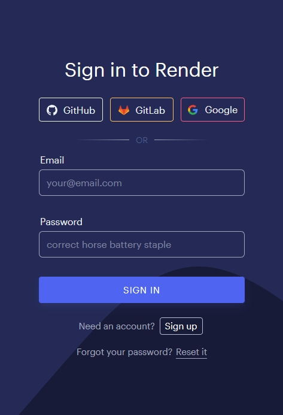
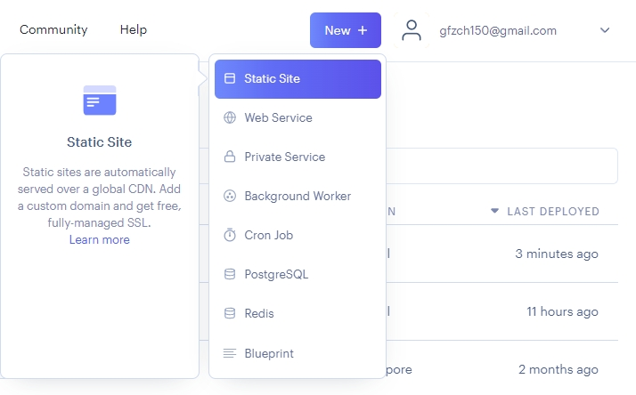
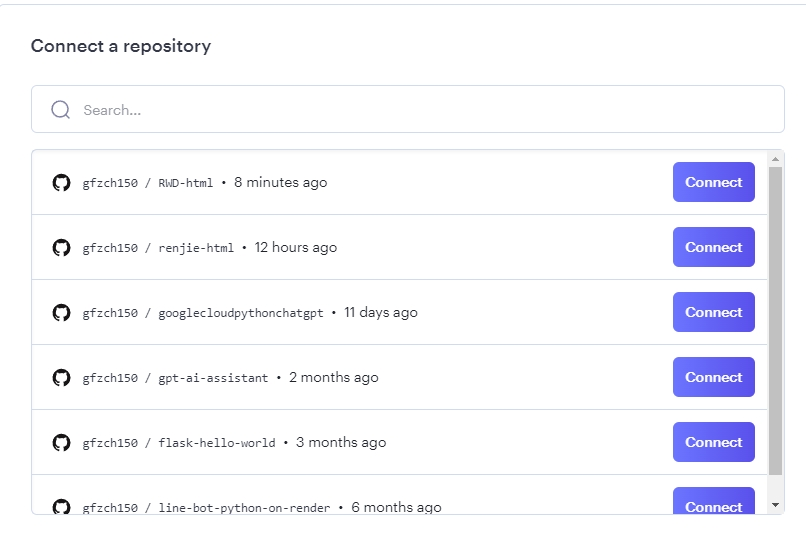
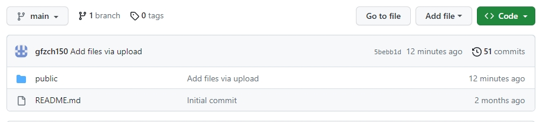
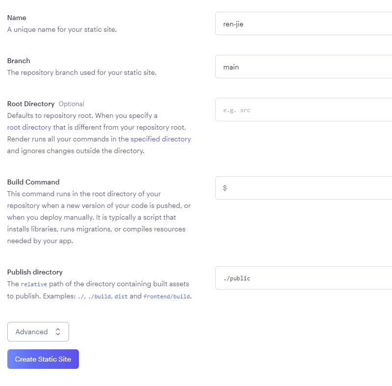
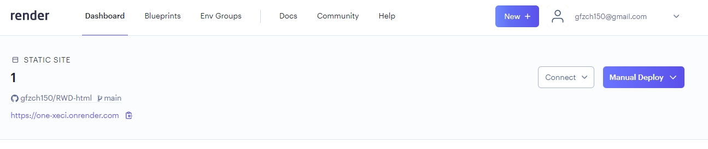

註冊render
→step1，使用github註冊.
搜尋Render官方 : render
→step2，建立靜態端點
點選右上角的static site
→step3，使用github進行整合,選擇建立好的專案.
選擇要的專案後,按下connect.
→step4，設定專案路徑
github資料夾路徑為public
命名專案名稱後,設定要連結的資料夾路徑
→step5,按下create static site.
如果之後要變更專案內容,只需要更改github內容即可,render會自動和github同步.
以下網址就是我們的靜態端點.
